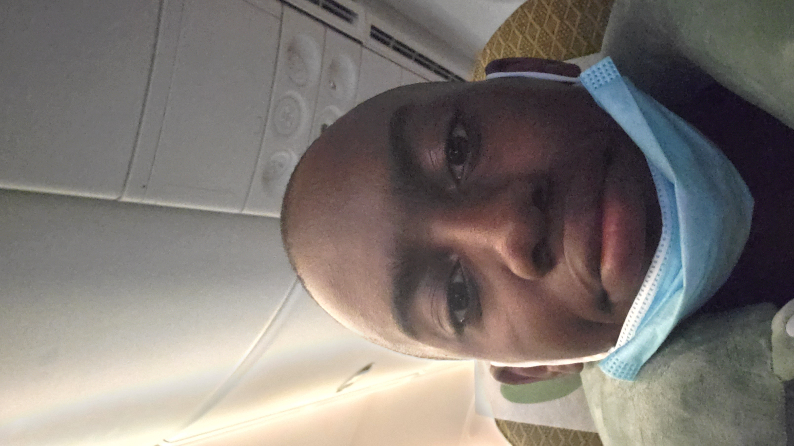

About Me
Short Bio
Hi, I am Obiako Nwakile. I am a 15-year old rising junior who attends
Fordham Preparatory School.
I enjoy gaming, coding, watching videos
and shows, learning new ways to improve myself, and being productive.
My favorite colors are red, blue, purple, and black. My favorite subject
is math and my least favorite is social studies.
Ambitions
Since I have a deep interest in computer science, I want a career pertaining to that field.
Although I have not decided on what job I want to pursue, I am coming to a conclusion on web designing.
Through prior experience in certain programs, I always had the most fun in coding the design for websites as opposed to typing the code.
Education

Since COVID-19 struck, I did not have the opportunity to take challenging
courses in my freshman year. My school did not allow us to take any entrance
exams for higher level courses. Luckily, I was able to take one honors course,
that one being Geometry Honors. The other courses were core: Biology,
English 1, Global 1, Religious Studies 1, Intro To Computers, Phys Ed,
and Latin 1. I did not let covid stop me from applying to more challenging
in my sophomore year. I ended up adding 3 more honors classes to my
schedule including a 7th subject. I took Chemistry Honors, Global 2 Honors,
English 2, Precalculus Honors, Phys Ed, Religious Studies 2, Latin 2 Honors,
and Studio Art 1. For my junior year, the current year of my high school experience,
I chose to take 3 APs, 2 honors, and a different 7th subject. As much as I wanted
to take the AP computer science course this year, it could not fit my schedule.
The courses I'm taking this year are AP Calculus AB, AP Physics 1, AP English
Language, Latin 3 Honors, U.S. History Honors, Phys Ed, and Religious Studies 3.
Extracurriculars
Again, because COVID-19 ruined a lot of things , in my freshman year, I was not able
to participate in anything. I felt like my freshman year was a waste since I did not
get to do anything besides academics. This inspired me to be active in my school
once everything goes back to normal. In my sophomore year, I participated in many clubs and one sport.
I did outdoors track and field as a sport, and for the clubs I participated in the Diversity Alliance, 3D Print, Robotics, Ping Pong, and Chess.
My Resume
To find out more about me, I linked and embedded my resume below.